data(frwind, package = "mev")
#?frwindTime series
Getting ready
To begin, we load the R packages that we will use. Remember: to view the help page for a command in R, just type ?command with command replaced by the name of the function.
Let’s first load the wind speed data from the mev package.
Time-series extremes
We here consider the wind speed observations from the first station. We show the time series data for the first year of observation:
obs = frwind$S1
plot(obs[1:365],
type = "h",
xlab = "Day",
ylab = "Observation")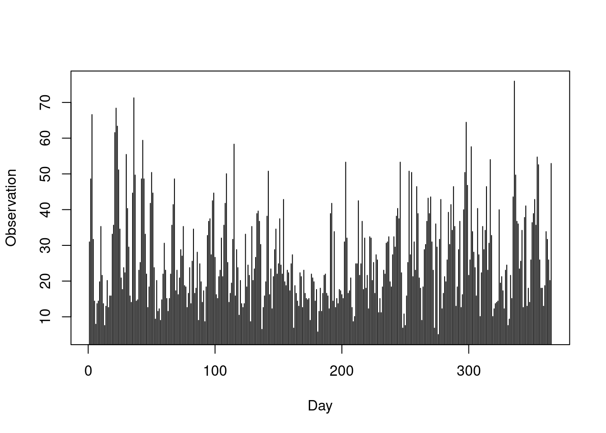
Exploratory analyses
Next, we explore the extremogram (also called auto tail dependence function), as implemented in the package extRemes. We set a probability level for the threshold corresponding to correspond to approximately one exceedance per month.
prob = 1-1/30
maxlag = 7
atdf(obs, u = prob, lag.max = maxlag)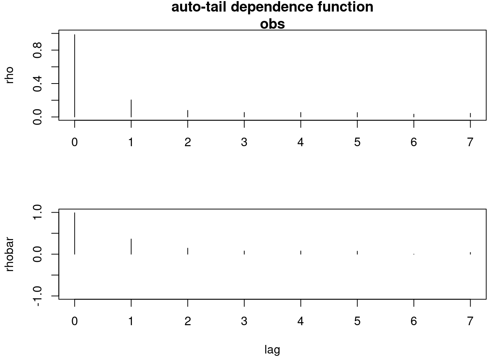
Clearly, extremal dependance decays quite fast, and the chi-bar coefficient (here called rhobar) points towards asymptotic independence for all positive time lags. Nevertheless, using the standard methods assuming asymptotic dependence can still be useful but may overestimate the strength of extremal correlation at very high quantile levels.
We can also perform a \(\overline{\chi}\)-based analysis using tsdep.plot in the POT package. If necessary, we can reset graphics device with graphics.off().
par(mfrow = c(1,1))
u = quantile(obs, prob)
tsdep.plot(obs, u = u, lag.max = 7) # POT package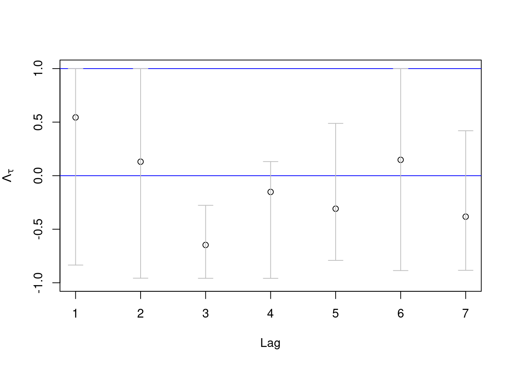
The confidence bounds are relatively large but they tend to be bounded away from 1 (implying asymptotic independence).
A similar analysis can be done with the extremogram package. We here estimate the upper-tail extremogram. We first produce an extremogram plot. Confidence bounds can also be obtained.
ext = extremogram1(
obs,
quant = prob,
type = 1,
maxlag = maxlag)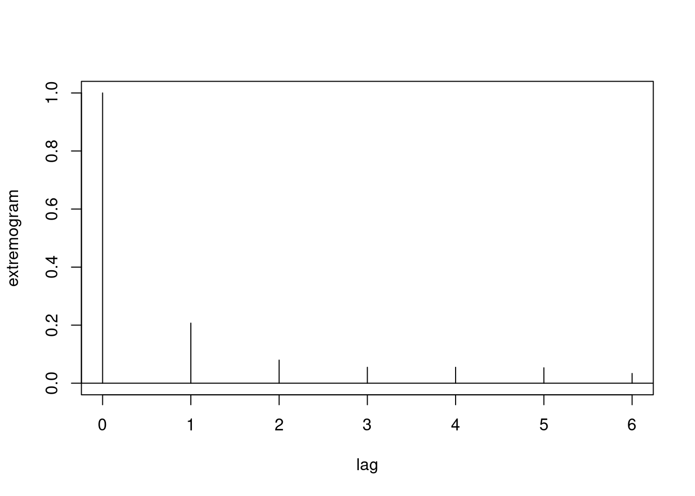
bootconf1(obs,
R = 100,
l = 30,
maxlag = maxlag,
quant = prob,
type = 1,
par = 1,
alpha = 0.05)
points(x = 1:(maxlag-1),
y = ext[-1],
pch = 19,
col = "blue")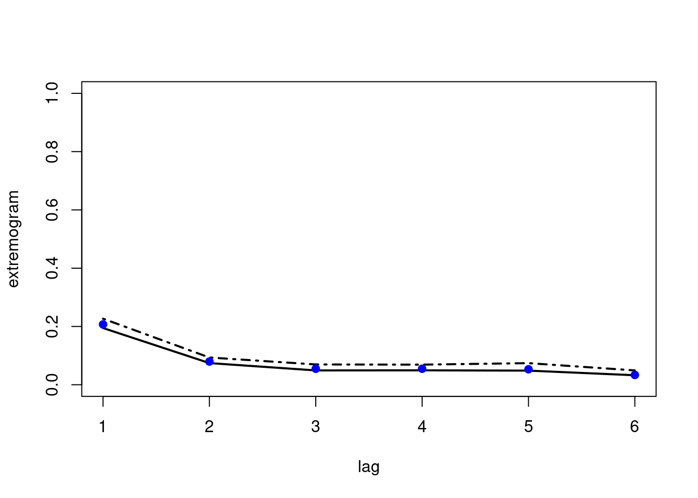
We note that there is still room for improvement of the output of these functions.
It is also possible to calculate cross-extremogram between two measurement stations, and corresponding confidence bounds.
obs1 = frwind$S2
obs2 = frwind$S3
ext_cross = extremogram2(
cbind(obs1, obs2),
quant1 = prob,
quant2 = prob,
type = 1,
maxlag = maxlag)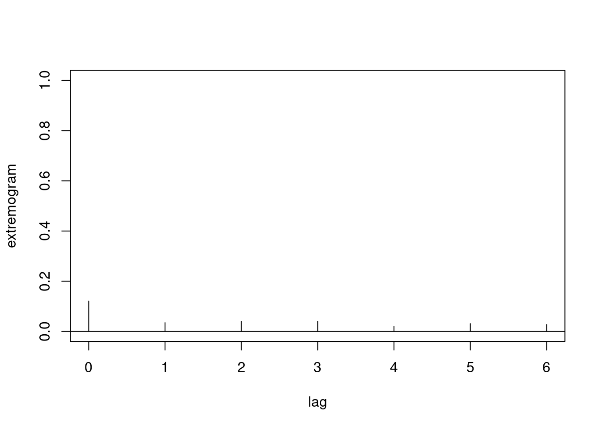
bootconf2(
cbind(obs1, obs2),
R = 100,
l = 30,
maxlag = maxlag,
quant1 = prob,
quant2 = prob,
type = 1,
par = 1,
alpha = 0.05)
points(x = 1:(maxlag-1),
y = ext_cross[-1],
pch = 19,
col = "blue")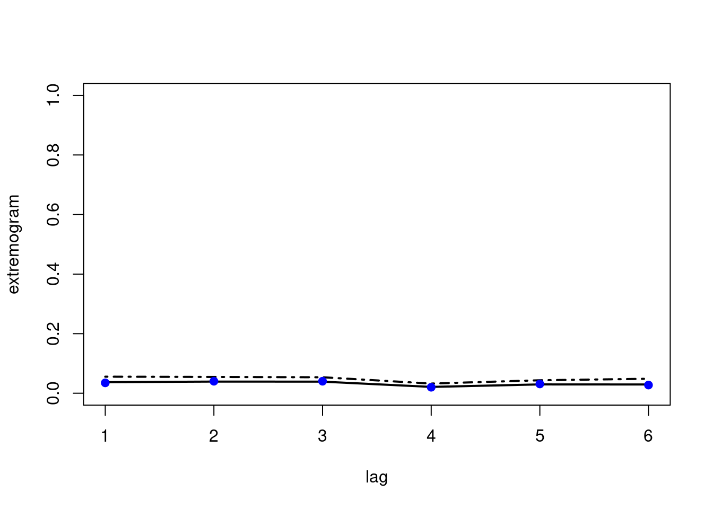
We find that the extremal dependence across the two series is very weak here.
Estimation of the extremal index
A large number of estimation approaches are available in the exdex package (type ?exdex” for the help package); see also the package vignettefor more detailed information.
We first explore estimation based on maxima for sliding blocks. Here, we use block sizes of approximately one month. We further obtain and visualize symmetric confidence intervals.
theta = spm(obs, 30)
summary(theta)
Call:
spm(data = obs, b = 30)
Estimate Std. Error Bias adj.
N2015, sliding 0.6755 0.02495 0.002101
BB2018, sliding 0.7158 0.02356 0.002026
BB2018b, sliding 0.6825 0.02356 0.035360
N2015, disjoint 0.6830 0.02857 0.002387
BB2018, disjoint 0.7233 0.02779 0.002331
BB2018b, disjoint 0.6900 0.02779 0.035660conf = confint(theta)
conf = confint(theta, interval_type = "lik")
plot(conf)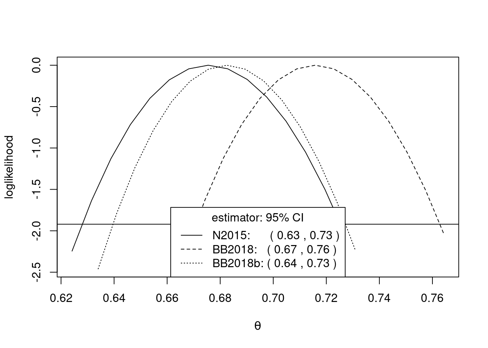
The estimation of the extremal index can be sensitive to the block size. We check this for longer and shorter blocks.
theta2 = spm(obs, 14)
theta3 = spm(obs, 60)
cbind(theta2$theta_sl,
theta$theta_sl,
theta3$theta_sl) [,1] [,2] [,3]
N2015 0.6335512 0.6754860 0.6845424
BB2018 0.7187804 0.7158157 0.7038313
BB2018b 0.6473518 0.6824824 0.6871646There is some moderate variability in the estimates.
Moreover, there is a tool to help choosing an optimal block size. The execution of the following command can take more than one minute. Here, we explore block sizes between one and ten weeks. Note that certain small b-values may be too small for the sampling variance of the sliding blocks estimator to be estimated.
b_vals = 7*1:10
res = choose_b(obs, b_vals)
plot(res, ylim = c(0, 1))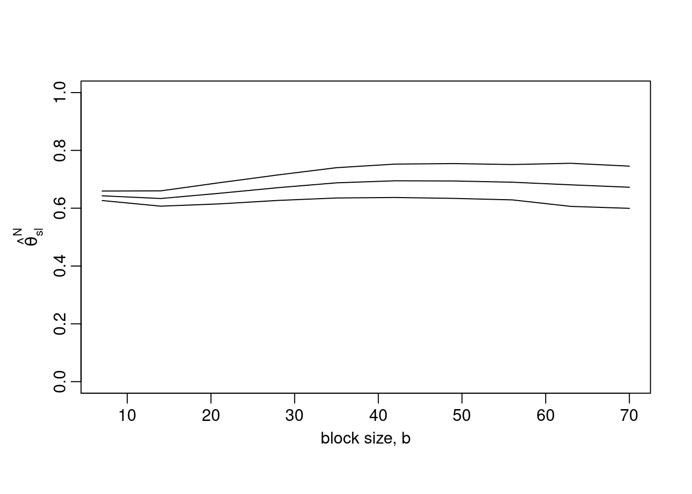
Here, even for a relatively small block size (\(b=7\)), the estimate is not significantly different from results for larger blocks, and it makes sense to use the estimate obtained for \(b=7\).
Another possibility is to estimate the extremal index based on threshold exceedances. We set a probability level for the threshold corresponding to correspond to approximately one exceedance per month. We here explore two possible estimator, the \(K\)-gaps and $D$-gaps estimators.
prob = 1-1/30
u = quantile(obs, prob)
theta = kgaps(obs, u, k = 1)
summary(theta)
Call:
kgaps(data = obs, u = u, k = 1)
Estimate Std. Error
theta 0.7973 0.01532theta = dgaps(obs, u, D = 3)
summary(theta)
Call:
dgaps(data = obs, u = u, D = 3)
Estimate Std. Error
theta 0.7936 0.01902Again, for the sake of choosing optimal tuning parameters, we have visual tool for the \(K\)-gaps estimator to explore different thresholds and \(K\)-values.
res = choose_uk(obs, u = quantile(obs, 1-1/c(7, 14, 30, 60, 90, 180)), k = 1:7)
plot(res, y = "theta")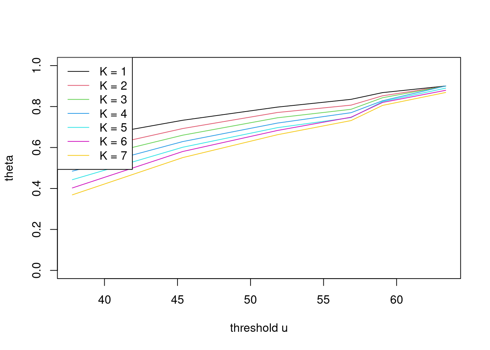
The estimates look more stable only at relatively high thresholds. In practice, this lack of asymptotic stability makes threshold choice difficult. However, sometimes, there may be a specific application-relevant threshold that provides a natural choice. For example, the monthly return level with \(K=3\) leads to estimates similar to the blocks estimates.
Another implementation of an extremal-index estimator comes from the extRemes package.
extremalindex(obs, u, method = "runs", run.length = 2)
Runs Estimator for the Extremal Index
extremal.index number.of.clusters run.length
0.7628319 431.0000000 2.0000000 extremalindex(obs, u, method = "intervals")
Intervals Method Estimator for the Extremal Index
NULL
theta.tilde used because there exist inter-exceedance times > 2.
extremal.index number.of.clusters run.length
0.6547669 358.0000000 7.0000000 In general, it is recommended to check sensitivity of estimates to different methods/thresholds.
Peaks-over-threshold with declustering
Here, we exemplify the approach using the implementation in the extRemes package. We also provide a comparison to estimation without any prior declustering.
obs_decluster = decluster(
x = obs,
threshold = u,
method = "runs",
run.length = 2)
fit = fevd(
x = obs_decluster,
threshold = u,
type = "GP",
time.units = "365/year")
print(fit)
fevd(x = obs_decluster, threshold = u, type = "GP", time.units = "365/year")
[1] "Estimation Method used: MLE"
Negative Log-Likelihood Value: 1313.137
Estimated parameters:
scale shape
7.7617037 -0.1180915
Standard Error Estimates:
scale shape
0.4581816 0.0358274
Estimated parameter covariance matrix.
scale shape
scale 0.20993036 -0.011767376
shape -0.01176738 0.001283602
AIC = 2630.274
BIC = 2638.484 plot(fit)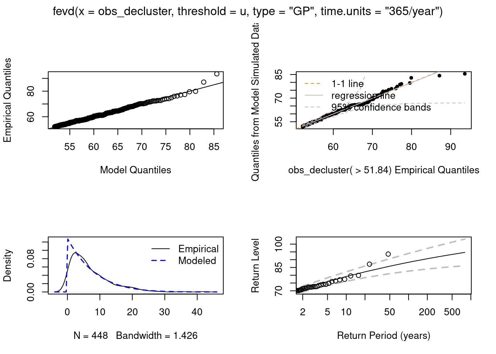
fit2 = fevd(x = obs,
threshold = u,
type = "GP",
time.units = "365/year")
print(fit2)
fevd(x = obs, threshold = u, type = "GP", time.units = "365/year")
[1] "Estimation Method used: MLE"
Negative Log-Likelihood Value: 1624.892
Estimated parameters:
scale shape
7.2300607 -0.1023352
Standard Error Estimates:
scale shape
0.38740656 0.03346132
Estimated parameter covariance matrix.
scale shape
scale 0.150083839 -0.009270985
shape -0.009270985 0.001119660
AIC = 3253.784
BIC = 3262.457 plot(fit2)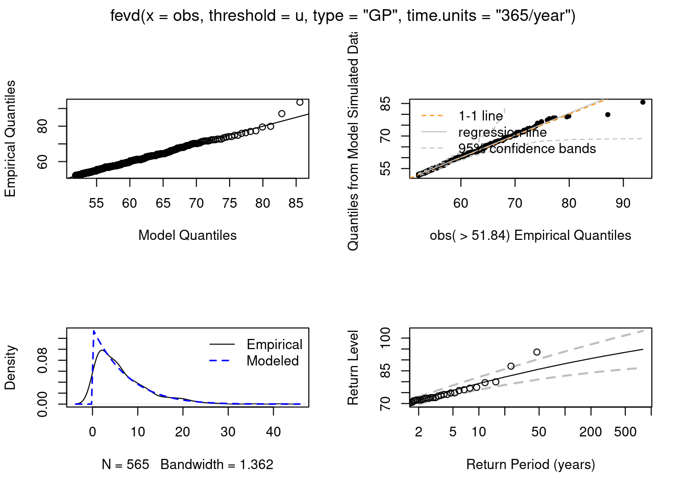
As suggested by theory, the estimated values are relatively close. The standard error estimates without declustering are lower but may be biased towards too low values.
Likelihood estimation of the extremal index and the GPD without declustering
The lite package uses all exceedances for likelihood-based estimation with an adjustment to avoid biased uncertainty estimates. This avoids wasting information when we keep only cluster maxima. The \(K\)-gaps estimator is used for the extremal index. Remember that there is the function choose_uk(…)from above to help with the choice of \(K\) and the threshold. Finally, we can produce unbiased confidence intervals for parameters.
fit = flite(obs, u = u, k = 3)
summary(fit)
Call:
flite(data = obs, u = u, k = 3)
Estimate Std. Error
p[u] 0.03283 0.001358
sigma[u] 7.23000 0.377000
xi -0.10230 0.036500
theta 0.74510 0.016190confint(fit) 2.5% 97.5%
pu 0.03024674 0.03556012
sigmau 6.50184018 7.98516959
xi -0.15912634 -0.01711611
theta 0.71278235 0.77615902Joint modeling of margins and dependence of time-series extremes
We show how a first-order Markov chain model can be fitted using a censored likelihood thanks to the POT package. Here, we use the bivariate logistic distribution to define the Markov chain transitions densities. Some graphical output is available to diagnostic the fitted model. We first illustrate the estimation for simulated data where the true parameters are known.
set.seed(2)
obs_simulated = simmc(
n = 5000,
alpha = .5,
model = "log",
margin = "gumbel")
fit_mc_simulated = fitmcgpd(
obs_simulated,
threshold = quantile(obs_simulated, 0.95),
model = "log")
fit_mc_simulated
Call: fitmcgpd(data = obs_simulated, threshold = quantile(obs_simulated, 0.95), model = "log")
Estimator: MLE
Dependence Model and Strenght:
Model : Logistic
lim_u Pr[ X_1 > u | X_2 > u] = 0.565
Deviance: 1646.856
AIC: 1652.856
Threshold Call:
Number Above: 250
Proportion Above: 0.05
Estimates
scale shape alpha
0.90763 0.02984 0.52114
Standard Errors
scale shape alpha
0.10411 0.06264 0.03056
Asymptotic Variance Covariance
scale shape alpha
scale 0.0108383 -0.0036266 -0.0019415
shape -0.0036266 0.0039242 -0.0001326
alpha -0.0019415 -0.0001326 0.0009339
Optimization Information
Convergence: successful
Function Evaluations: 26
Gradient Evaluations: 8 plot(fit_mc_simulated)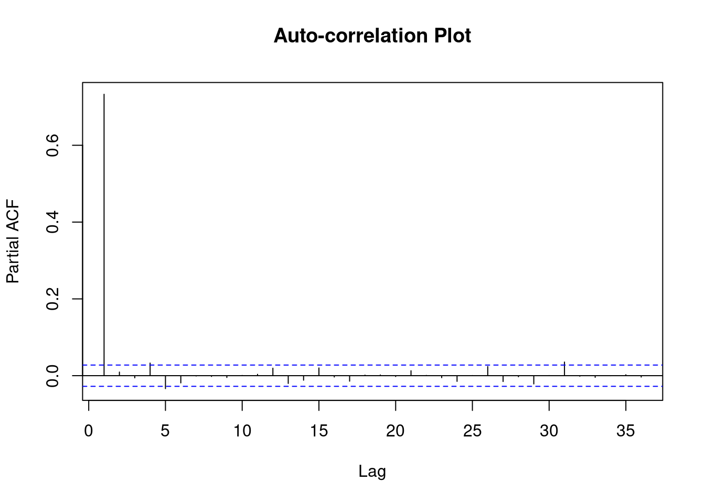
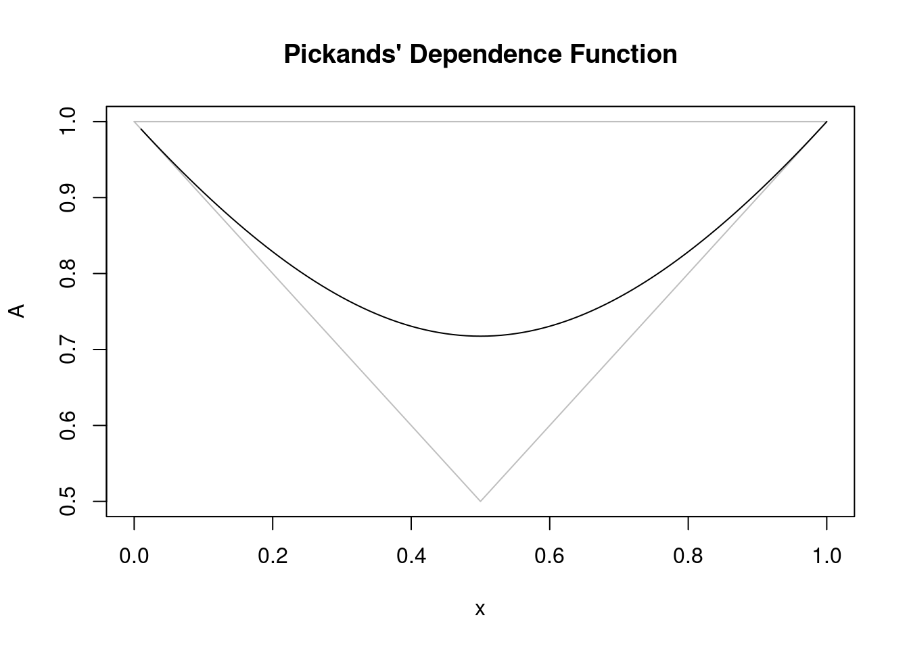
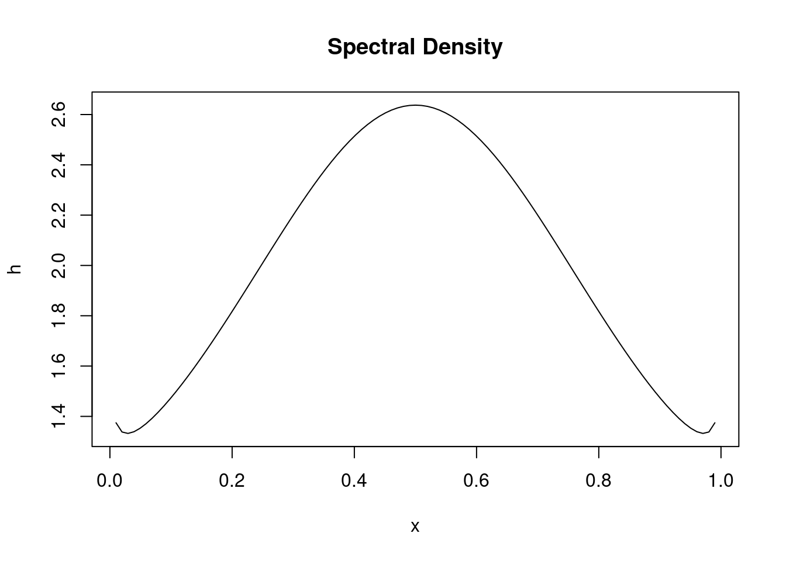
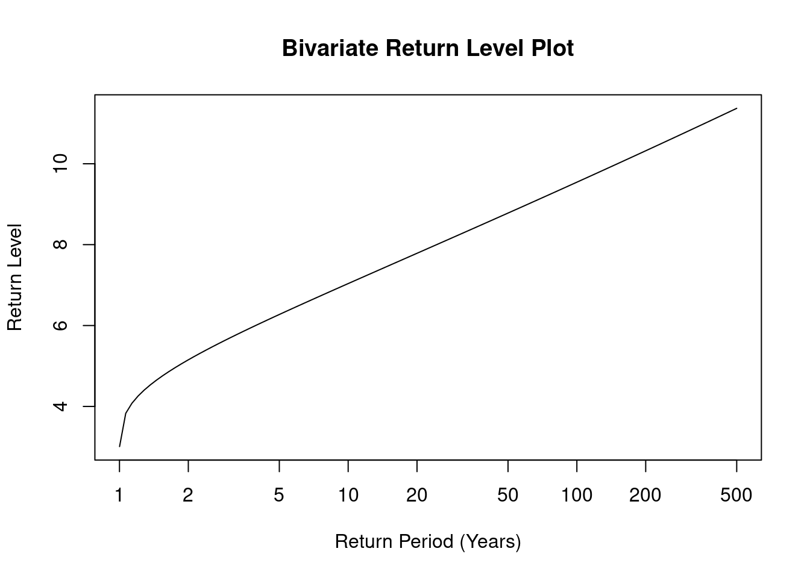
Estimates are quite close to simulated parameters (scale = 1, shape = 0, alpha = 0.5)
Next, we apply the method to our wind speed data. We also compare its estimation of marginal parameters to a marginal fit that does not take into account the dependence.
fit_mc = fitmcgpd(obs, u, model = "log")
fit_mc
Call: fitmcgpd(data = obs, threshold = u, model = "log")
Estimator: MLE
Dependence Model and Strenght:
Model : Logistic
lim_u Pr[ X_1 > u | X_2 > u] = 0.18
Deviance: 7927.214
AIC: 7933.214
Threshold Call:
Number Above: 565
Proportion Above: 0.0328
Estimates
scale shape alpha
7.31821 -0.07324 0.86402
Standard Errors
scale shape alpha
0.43003 0.03833 0.01356
Asymptotic Variance Covariance
scale shape alpha
scale 1.849e-01 -1.122e-02 -2.001e-03
shape -1.122e-02 1.469e-03 -4.220e-06
alpha -2.001e-03 -4.220e-06 1.838e-04
Optimization Information
Convergence: successful
Function Evaluations: 47
Gradient Evaluations: 12 plot(fit_mc)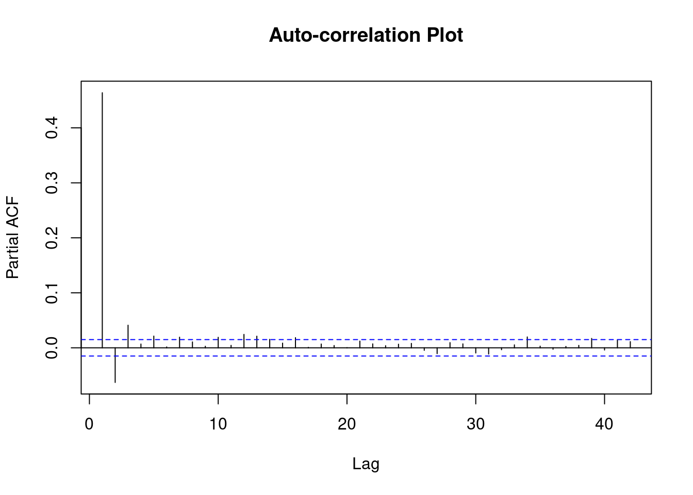
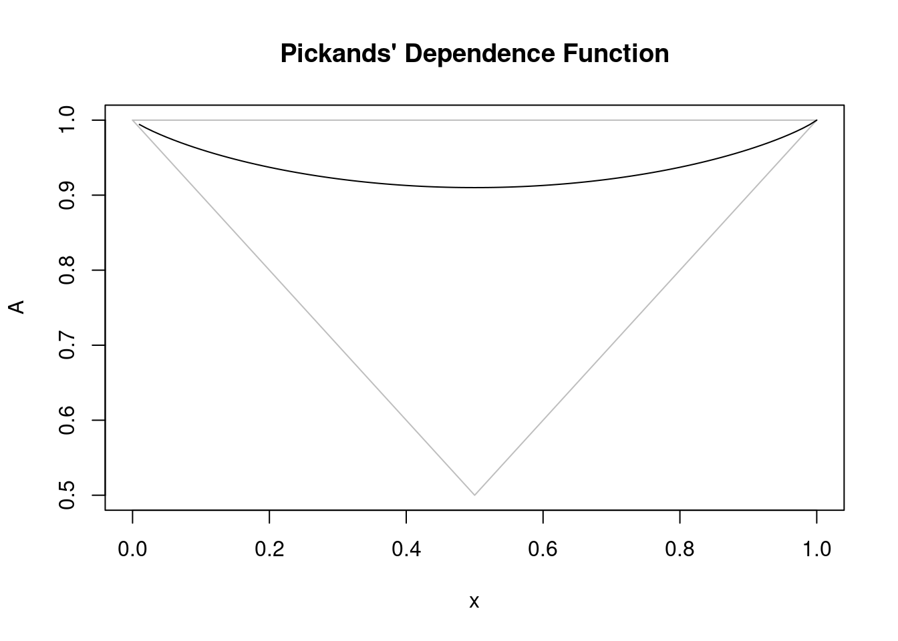
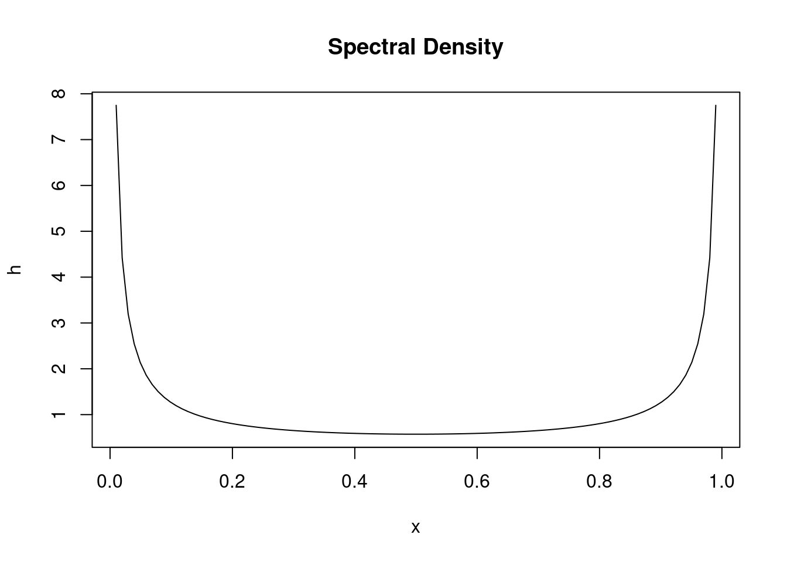
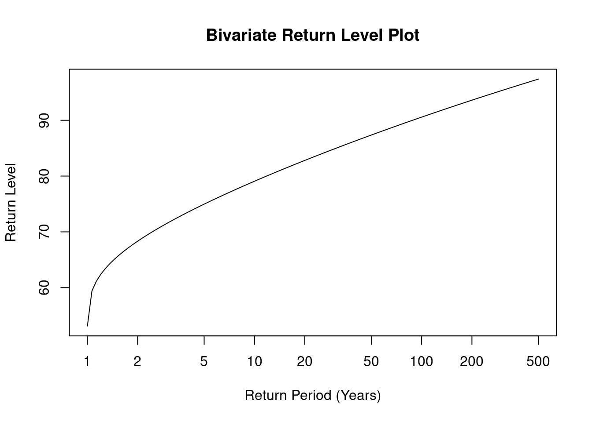
fit_gpd = fitgpd(obs, u, est = "mle")
fit_gpd Estimator: MLE
Deviance: 3249.784
AIC: 3253.784
Varying Threshold: FALSE
Threshold Call: c("96.66667%" = 51.84)
Number Above: 565
Proportion Above: 0.0328
Estimates
scale shape
7.2300 -0.1023
Standard Error Type: observed
Standard Errors
scale shape
0.38740 0.03346
Asymptotic Variance Covariance
scale shape
scale 0.150081 -0.009271
shape -0.009271 0.001120
Optimization Information
Convergence: successful
Function Evaluations: 29
Gradient Evaluations: 9 Good news: The marginal parameters estimates are very similar.
Exercice
Perform a similar analysis for one or several of the other stations (wind speeds) or for temperature data, and interpret results and compare them across stations.